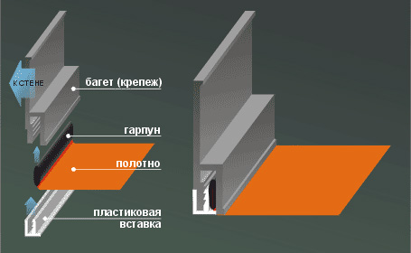

Технология установки натяжных потолков клиновым способом крепления
Установка натяжного потолка достаточна проста. Начала монтажа заключается в установке крепежного профиля по периметру всего помещения к стене. Потолок опуститься не ниже 10 см, но возможно и меньше все зависит от такого, какой свет будет установлен. В случае установки люстры потолок опуститься на 3 см и не более 8-10 см в случае установки встроенных светильников. Затем края нагретого полотна зажимают в профиль с помощью клина. Хочется заметить , что при нагреве полотна воздух в вашей комнате может нагреться до 60 градусов. Отсюда название метода крепления – клиновый. Излишки полотна обрезают и прячут. После того как полотно остывает оно натягивается и образует идеально ровную, гладкую поверхность.
При выборе устанавливать натяжной потолок именно клиновым способом у вас появляется такое преимущество как необязательная абсолютная точность при измерении помещения, это не так важно.
Установка потолка нашими квалифицированными бригадами с точным соблюдением последовательности процесса обеспечивает прямолинейность швов ( если они есть) и отсутствие складок. Так же клиновая система крепления потолка позволяет использовать полотно повторно, например, если вам необходимо будет снять этот потолок и переустановить его в помещение поменьше, что позволяет: Во-первых, экономично использовать ваши средства при этом с новым дизайном ваших комнат. Во-вторых, в той комнате, где вы сняли данный потолок и установили нечто другое вами задуманное или даже просто смене цвета потолка привнесет в ваш дом другие впечатления и «новый» уют. Клиновый способ установки натяжного потолка позволяет монтировать единым полотном, зафиксировав полотно только по периметру, в помещениях более 100 кв. м., т. к. этот способ позволяет регулировать степень натяжения полотна и в случае необходимости, вносить изменения в конструкцию, добавляя элементы, не учтенные в процессе изготовления полотна. С помощью клинового крепежа можно установить многоуровневые потолки. Практически любой формы, любой сложности конструкции, имеющие радиусы, люки и много другое.

Технология установки натяжных потолков гарпунным способом крепления
При гарпунном способе по всему периметру самого полотна приваривают окантовку из более жесткого ПВХ. Она имеет в поперечном сечении форму крючка-гарпуна. Размер полотна должен быть на 6% меньше расстояния между стенами, в пределах которых его нужно будет растянуть, погрешность которая допускается примерно в 1 см. Далее монтаж, который осуществляется следующим образом. Начала один из углов полотна гарпуном зацепляют с помощью шпателя за крепежный профиль. Затем его нагреваю до 80 С часть полотна вдоль диагонали и растягивая размягченную пленку, заводят шпателем гарпун в паз профиля в противоположном углу. Это же повторяют и на другой диагонали, а затем - по всему периметру окантовки. После того как потолок охладиться получается прочное соединение натянутой пленки с крепежным профилем. В помещение воздух нагревается не выше чем на 60 С. Хорошо предварительно измеренный и правильно скроенное полотно обеспечивает прямолинейность швов и почти полное отсутствие складок. Если они все же остались, их убирают путем нагрева строительным феном, после того как полотно уже окончательно закреплено.
Недостатки: Невозможность перенести натяжной потолок в другое помещение. А также отличаются сложностью расчетов при проведении замеров. И особенность конструкции его такая, что полотно по всему периметру оборудовано специальным гарпуном, который крепится к багету и натягивает потолок. Снять гарпун не возможно, потому и получается, что полотно потолка нельзя использовать в помещениях, меньших по площади, а только в полностью совподающих по форме.
Технология установки натяжных потолков кулачковым способом крепления
Полотно потолка крепиться между двумя полукруглыми поверхностями разводимых «кулачков», которые входят в крепежный профиль. Эти «кулачки» раздвигаются при проталкивании полотна шпателем, автоматически сжимаются при попытке вытянуть ее назад.